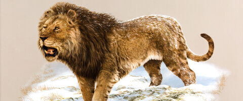

How Did They Get Here?
During the Ice Age, sea levels dropped 400 feet. Where the Bering Strait is today, a land bridge was formed between Asia and North America which was named Beringia. At its greatest width, it spanned more than 1,000 miles north to south. Beringia was mostly treeless plains, although small trees and bushes could be found in some areas.
Beringia was used up to 1,800,000 years ago for migration to and from Asia to North America continents. This is the route that elephants originating in Africa used to find their way to Nebraska. The elephants migrated to Asia and into North America as their populations expanded and they searched for new grazing areas. Other animals migrated with the elephants, like the American Lion.
Why Did They Stay?
In the Cretaceous period, Nebraska was covered by the Western Interior Seaway. Giant sharks and sea turtles were found along with Plesiosaurs which looked like the Loch Ness Monster and grew to 40 feet long. Few dinosaur fossils are found in Nebraska since the state was covered by the sea for most of the Jurassic Period.

When the sea retreated, Nebraska developed arid grassy plains which provided food for the early herbivores like camels, horses, elephants, and rhinoceros.

As the Global Ice Cap began to push to the south, the advancing Ice Cap of North America cooled the plains of Nebraska. As migrating animals followed the edge of the Ice Cap, they found the cold and arid plains of Ice Age Nebraska provided a comfortable environment for the Megafauna like Mammoths and Mastodons.